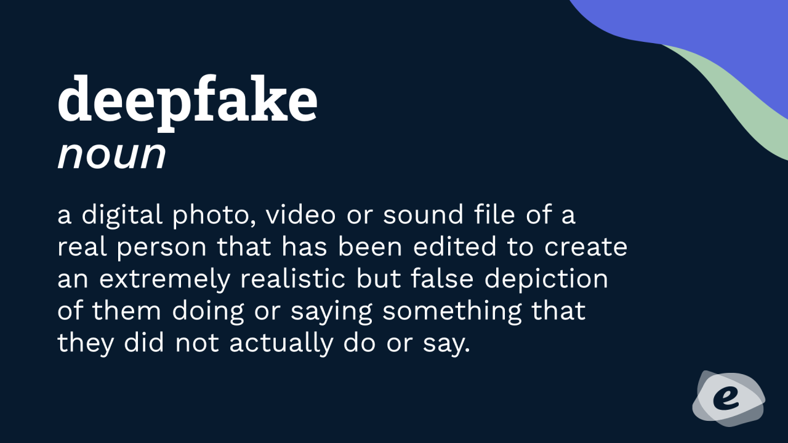

Upload Your Deepfake Video
✅ Video uploaded successfully!
✅ Video uploaded successfully!
What is Deepfake Detection
Deepfake detection is the process of finding out whether a photo, video, or audio recording has been digitally changed to show something that did not really happen. Deepfakes are created using advanced technology like artificial intelligence, and they can look very real, making it hard for people to tell if they are fake. Detecting deepfakes is important because it helps prevent the spread of false information and protects people from being tricked or harmed. To detect deepfakes, experts use special computer programs that look closely at small details, such as unnatural blinking, strange lighting, or mismatched voices. Sometimes, even tiny mistakes in the deepfake, which are hard for the human eye to notice, can be found by these smart tools. As deepfakes become more advanced, researchers are working hard to create even better ways to catch them and keep information safe and trustworthy.
Importance of Deepfake Detection
Detecting deepfakes is very important because it helps protect people and society from being misled by false information. Deepfakes can be used to spread fake news, create fake videos of important people, or trick others into believing something that isn’t true. If we can detect deepfakes early, we can stop the damage they might cause and make sure that people only trust real and honest information. It also helps protect individuals from being harmed personally or professionally. For example, someone’s image or voice could be faked to create false accusations or damage their reputation. By improving deepfake detection, we can defend people’s rights, maintain trust in media and communication, and make the internet a safer place for everyone.
Impact of DeepFakes on Society
Deepfakes can have a strong impact on society by spreading false information and creating confusion. Fake videos or audios of leaders, celebrities, or ordinary people can easily go viral, making people believe things that are not true. This can lead to misunderstandings, damage to someone's reputation, and even social unrest. In some cases, deepfakes have been used to create fake news during elections, which can affect how people vote and harm the fairness of democracy. Deepfakes also make it harder for people to trust what they see and hear online. When it becomes difficult to tell what is real and what is fake, people may start doubting everything, including true information. This loss of trust can weaken relationships, create fear, and make it easier for bad actors to spread harmful ideas. Therefore, understanding and detecting deepfakes is very important to protect the truth and keep society safe and strong.
Email: ce.muskan.dmk@gmail.com
Phone: +91 9142496404
Email: priya726kumari@gmail.com
Phone: +91 6205898365
Email: Rajkumarsaw3002@gmail.com
Phone: +91 9771667031
Email: shivamkumar9clg@gmail.com
Phone: +91 9113479631
Email: vikashlearnskill@gmail.com
Phone: +91 9798490863